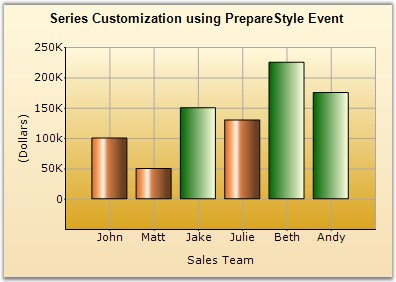

When a series point is about to be rendered by the chart, it will raise this event and allow event subscribers to change the style used.
|
[C#]
//Listen to the prepare style event for the series. series.PrepareStyle += new ChartPrepareStyleInfoHandler(series_PrepareStyle);
private void series_PrepareStyle(object sender, ChartPrepareStyleInfoEventArgs args) { ChartSeries series = sender as ChartSeries ; if(series != null) { //Condition to select members (data points) who made 100 % quota in sales if(((series.Points[args.Index].YValues[0] / 150) * 100) >= 100) { args.Style.Interior = new Syncfusion.Drawing.BrushInfo(Syncfusion.Drawing.GradientStyle.Horizontal, System.Drawing. Color.DarkGreen, System.Drawing.Color.LightYellow); } } } |
|
[VB.NET]
'Listen to the prepare style event for the series. AddHandler series.PrepareStyle, AddressOf Me.ChartControlSeries_PrepareStyle
Private Sub series_PrepareStyle(ByVal sender As Object, ByVal args As ChartPrepareStyleInfoEventArgs) Dim series As ChartSeries = TryCast(sender, ChartSeries) If series IsNot Nothing Then 'Condition to select members (data points) who made 100 % quota in sales If ((series.Points(args.Index).YValues(0) / 150) * 100) >= 100 Then args.Style.Interior = New Syncfusion.Drawing.BrushInfo(Syncfusion.Drawing.GradientStyle.Horizontal, System.Drawing.Color.DarkGreen, System.Drawing.Color.LightYellow) End If End If End Sub |

Figure 365: Green columns indicate employees who met 100 percent of their Quota